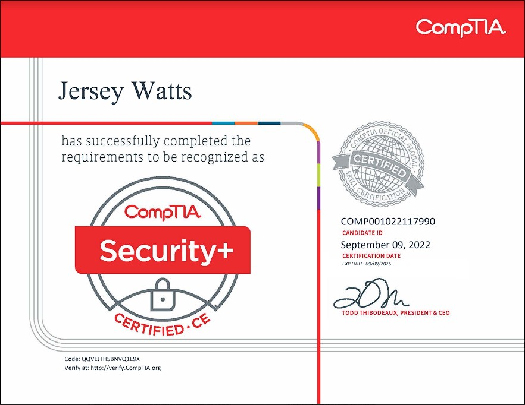

Highly skilled and certified junior systems administrator with 2 years of IT service experience and 4 years of customer service training. Proficient in Linux OS, Python, HTML5, JS, CSS, AWS, and Windows OS, as well as network security and firewall management. Experienced in working with Cisco IOS and Nexus OS, and knowledgeable in router and switch configuration and troubleshooting, WAN/LAN configuration and support, wireless network design and implementation, and virtualization (VMware, Hyper-V). Possesses a strong ability in optimizing network performance and ensuring customer satisfaction. CompTIA Security+ and AWS CLF-C01 certified.

Nov 2022 - Present
Jr System Admin — Pelatron Technologies LLC, Hill AFB, Utah
Create and manage tickets (incident and work orders) for NIPR and SIPR issues received via telephone, web portal, and email, documenting them in detail through the Automated Information System (AIS).
Use government-provided remote-support software tools to access customer end devices and resolve customer tickets.
Participate in the development, administration, and maintenance of a knowledge database work management support tool by writing and verifying knowledge articles.
Analyze software and hardware configurations and identify trends to create tickets for outages and ensure situational awareness for the Communications Focal Point (CFP).
Mar 2020 - Mar 2021
IT Service Personnel — Deep Clean Oki, Okinawa, Japan
Designed and implemented a highly secure and scalable network infrastructure.
Configured and maintained Cisco routers, switches, and firewalls.
Implemented network security best practices and monitored network activity for potential threats.
Designed and deployed wireless network solutions to improve network performance and coverage.
Developed and maintained company website, utilizing HTML, CSS and JavaScript
Mar 2021 - May 2022
Barista Shift Lead — Starbucks, Lehi, Utah
Cleaning and sanitizing work areas, utensils, and equipment.
Servicing customers and taking orders.
Counting inventory, pulling inventory, and ordering more inventory when low.
Feb 2019 - Feb 2021
Lifeguard — NAF, Okinawa, Japan
Maintain patron safety.
Ensure the work space is clean and free of hazards.
Taught water safety to individuals.
Managed a team and created scheduling.